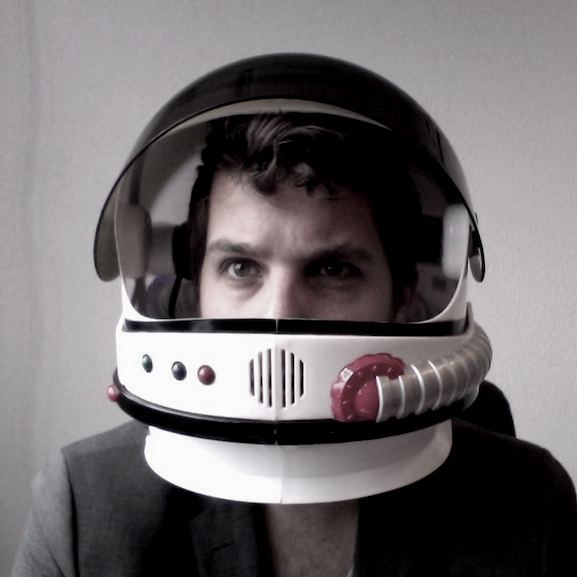

Over Peter van Grieken
 Sinds ik ongeveer 20 jaar geleden HTML ontdekte, ben ik op verschillende niveau's bezig geweest met webdesign. Van webdeveloper tot interactie ontwerper en zelfs van, jawel, Flash developer tot accessibility specialist.
De laatste jaren heb ik me echter meer en meer toegelegd op de gebruiksvriendelijkheid en de toegankelijkheid van websites. Onderwerpen die sinds de opkomst van kleine schermen en touchscreens nóg belangrijker zijn geworden.
Ik heb veel ervaring als frontend developer in grootschalige projecten en begeef me in die rol vaak op het snijvlak van het ontwerp en de techniek.
Om op de hoogte te blijven van nieuwe technieken en ideëen bezoek ik regelmatig conferenties en workshops in binnen- en buitenland. Daarnaast ben ik actief lid van Fronteers, de vakvereniging voor front-end ontwikkelaars.
LinkedIn Twitter